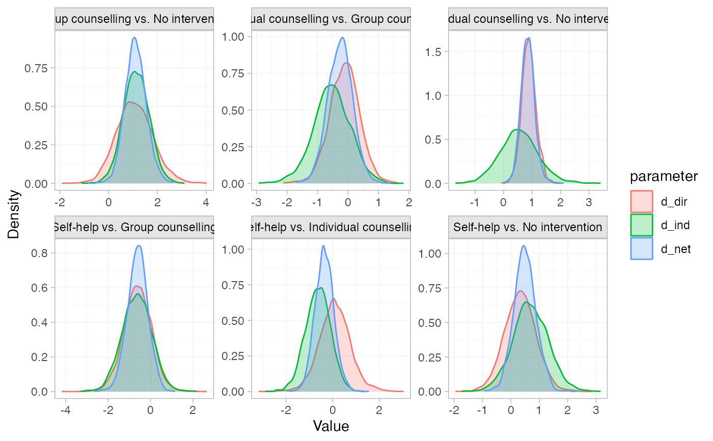
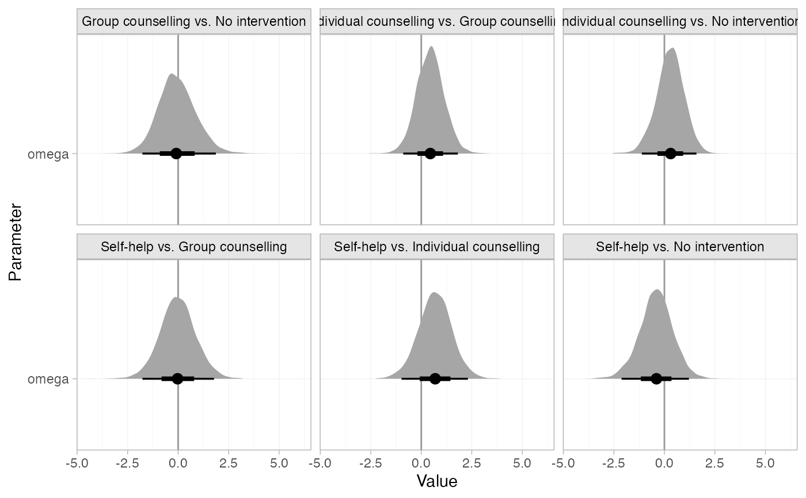
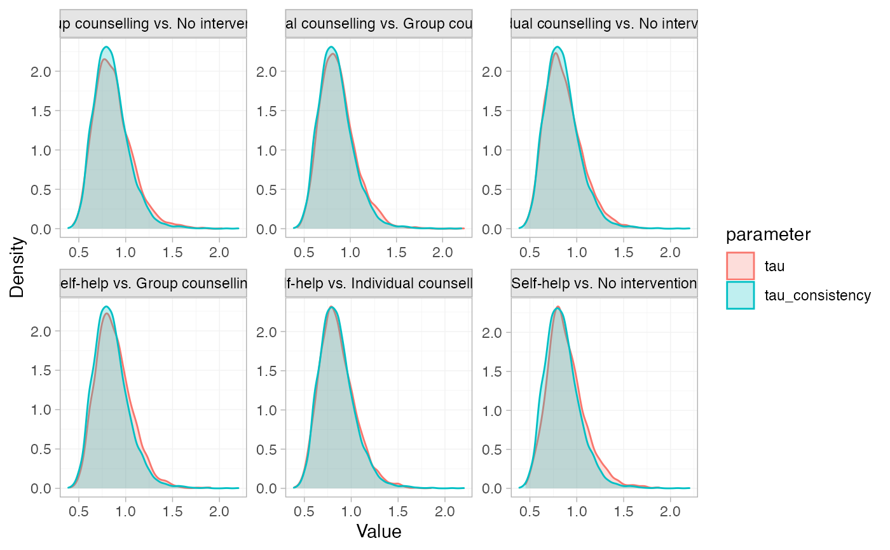

Produce summary plots of node-splitting models
Arguments
- x
A
nodesplit_summaryobject.- ...
Additional arguments passed on to the underlying
ggdistplot stat, see Details.- pars
Character vector specifying the parameters to include in the plot, choices include
"d"for the direct, indirect, and network estimates of relative effects,"omega"for the inconsistency factor, and"tau"for heterogeneity standard deviation in random effects models. Default is"d".- stat
Character string specifying the
ggdistplot stat to use. The default"dens_overlay"is a special case, producing an overlaid density plot.- orientation
Whether the
ggdistgeom is drawn horizontally ("horizontal") or vertically ("vertical"), default"horizontal".- ref_line
Numeric vector of positions for reference lines, by default no reference lines are drawn.
Details
Plotting is handled by ggplot2 and the stats and geoms provided in
the ggdist package. As a result, the output is very flexible. Any
plotting stats provided by ggdist may be used, via the argument stat.
The default "dens_overlay" is a special exception, which uses
ggplot2::geom_density(), to plot overlaid
densities. Additional arguments in ... are passed to the ggdist stat,
to customise the output.
Alternative stats can be specified to produce different summaries. For
example, specify stat = "[half]eye" to produce (half) eye plots, or stat = "pointinterval" to produce point estimates and credible intervals.
A full list of options and examples is found in the ggdist vignette
vignette("slabinterval", package = "ggdist").
A ggplot object is returned which can be further modified through the
usual ggplot2 functions to add further aesthetics, geoms, themes, etc.
Examples
# \donttest{
# Run smoking node-splitting example if not already available
if (!exists("smk_fit_RE_nodesplit")) example("example_smk_nodesplit", run.donttest = TRUE)
# }
# \donttest{
# Summarise the node-splitting results
(smk_nodesplit_summary <- summary(smk_fit_RE_nodesplit))
#> Node-splitting models fitted for 6 comparisons.
#>
#> ------------------------------ Node-split Group counselling vs. No intervention ----
#>
#> mean sd 2.5% 25% 50% 75% 97.5% Bulk_ESS Tail_ESS Rhat
#> d_net 1.10 0.43 0.28 0.81 1.09 1.38 2.01 1792 2159 1
#> d_dir 1.04 0.72 -0.37 0.56 1.03 1.49 2.55 3366 2654 1
#> d_ind 1.15 0.53 0.10 0.80 1.15 1.50 2.21 1888 2127 1
#> omega -0.10 0.88 -1.77 -0.69 -0.13 0.47 1.70 2427 2263 1
#> tau 0.85 0.19 0.54 0.72 0.83 0.95 1.31 1095 1824 1
#> tau_consistency 0.83 0.18 0.55 0.71 0.81 0.94 1.26 1549 1758 1
#>
#> Residual deviance: 54.6 (on 50 data points)
#> pD: 44.4
#> DIC: 99
#>
#> Bayesian p-value: 0.88
#>
#> ------------------------- Node-split Individual counselling vs. No intervention ----
#>
#> mean sd 2.5% 25% 50% 75% 97.5% Bulk_ESS Tail_ESS Rhat
#> d_net 0.86 0.24 0.41 0.70 0.85 1.00 1.34 1277 1723 1.00
#> d_dir 0.89 0.26 0.40 0.72 0.88 1.04 1.40 1915 2427 1.00
#> d_ind 0.58 0.67 -0.71 0.14 0.56 1.00 1.97 1532 1599 1.01
#> omega 0.31 0.68 -1.04 -0.12 0.32 0.76 1.61 1555 1671 1.00
#> tau 0.86 0.20 0.55 0.71 0.83 0.97 1.34 1221 1853 1.00
#> tau_consistency 0.83 0.18 0.55 0.71 0.81 0.94 1.26 1549 1758 1.00
#>
#> Residual deviance: 54 (on 50 data points)
#> pD: 44.1
#> DIC: 98.1
#>
#> Bayesian p-value: 0.63
#>
#> -------------------------------------- Node-split Self-help vs. No intervention ----
#>
#> mean sd 2.5% 25% 50% 75% 97.5% Bulk_ESS Tail_ESS Rhat
#> d_net 0.50 0.39 -0.25 0.24 0.49 0.75 1.30 2036 2569 1
#> d_dir 0.33 0.53 -0.70 -0.02 0.33 0.68 1.36 2751 2877 1
#> d_ind 0.71 0.63 -0.52 0.29 0.68 1.11 2.04 2006 2216 1
#> omega -0.38 0.83 -2.10 -0.90 -0.36 0.15 1.25 2098 2263 1
#> tau 0.87 0.20 0.55 0.73 0.84 0.98 1.34 1242 2029 1
#> tau_consistency 0.83 0.18 0.55 0.71 0.81 0.94 1.26 1549 1758 1
#>
#> Residual deviance: 53.8 (on 50 data points)
#> pD: 44.2
#> DIC: 98
#>
#> Bayesian p-value: 0.64
#>
#> ----------------------- Node-split Individual counselling vs. Group counselling ----
#>
#> mean sd 2.5% 25% 50% 75% 97.5% Bulk_ESS Tail_ESS Rhat
#> d_net -0.24 0.41 -1.09 -0.51 -0.23 0.02 0.56 2722 2753 1
#> d_dir -0.12 0.48 -1.06 -0.44 -0.11 0.19 0.81 3173 2531 1
#> d_ind -0.56 0.61 -1.80 -0.95 -0.54 -0.15 0.57 1681 2376 1
#> omega 0.44 0.66 -0.82 0.00 0.43 0.86 1.77 1662 2490 1
#> tau 0.86 0.20 0.55 0.72 0.83 0.97 1.32 1128 1775 1
#> tau_consistency 0.83 0.18 0.55 0.71 0.81 0.94 1.26 1549 1758 1
#>
#> Residual deviance: 54 (on 50 data points)
#> pD: 44.2
#> DIC: 98.2
#>
#> Bayesian p-value: 0.5
#>
#> ------------------------------------ Node-split Self-help vs. Group counselling ----
#>
#> mean sd 2.5% 25% 50% 75% 97.5% Bulk_ESS Tail_ESS Rhat
#> d_net -0.60 0.49 -1.59 -0.91 -0.59 -0.28 0.36 2352 2587 1
#> d_dir -0.60 0.66 -1.90 -1.03 -0.60 -0.17 0.67 3904 2823 1
#> d_ind -0.64 0.68 -1.98 -1.11 -0.63 -0.17 0.66 2065 2802 1
#> omega 0.04 0.89 -1.65 -0.54 0.04 0.61 1.82 2222 2632 1
#> tau 0.88 0.20 0.57 0.74 0.85 0.99 1.34 1012 2140 1
#> tau_consistency 0.83 0.18 0.55 0.71 0.81 0.94 1.26 1549 1758 1
#>
#> Residual deviance: 53.6 (on 50 data points)
#> pD: 44
#> DIC: 97.6
#>
#> Bayesian p-value: 0.97
#>
#> ------------------------------- Node-split Self-help vs. Individual counselling ----
#>
#> mean sd 2.5% 25% 50% 75% 97.5% Bulk_ESS Tail_ESS Rhat
#> d_net -0.36 0.41 -1.14 -0.62 -0.36 -0.09 0.46 2328 2818 1
#> d_dir 0.08 0.64 -1.16 -0.34 0.07 0.49 1.39 2949 2875 1
#> d_ind -0.62 0.53 -1.70 -0.95 -0.62 -0.28 0.43 1734 2371 1
#> omega 0.69 0.82 -0.97 0.17 0.69 1.23 2.32 1978 2413 1
#> tau 0.86 0.19 0.56 0.72 0.83 0.97 1.30 1070 2089 1
#> tau_consistency 0.83 0.18 0.55 0.71 0.81 0.94 1.26 1549 1758 1
#>
#> Residual deviance: 53.6 (on 50 data points)
#> pD: 44
#> DIC: 97.7
#>
#> Bayesian p-value: 0.38
# Plot the node-splitting results
plot(smk_nodesplit_summary)

# Plot the inconsistency factors instead, change the plot stat to half-eye,
# and add a reference line at 0
plot(smk_nodesplit_summary, pars = "omega", stat = "halfeye", ref_line = 0)

# Plot a comparison of the heterogeneity under the node-split models vs.
# the consistency model
plot(smk_nodesplit_summary, pars = "tau")

# }